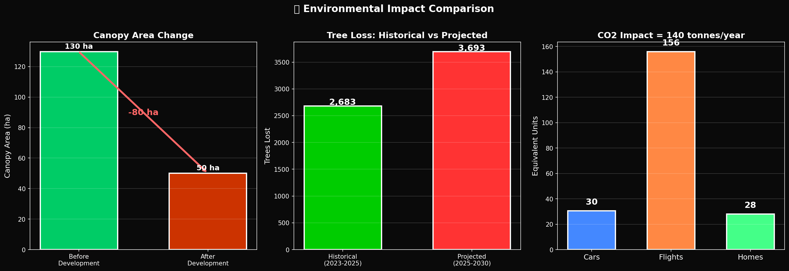
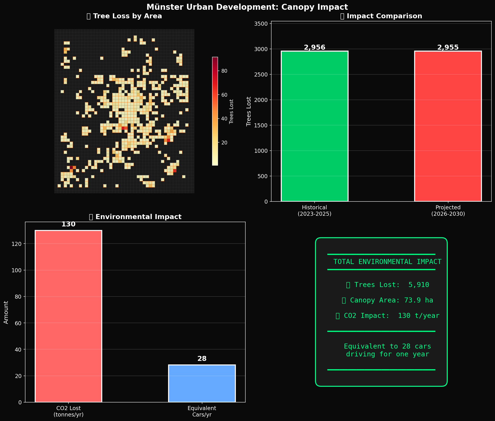

Tree canopy loss estimation and carbon sequestration impact
| Canopy Lost | 33.5 ha |
| Trees Removed | ~2,683 |
| CO2 Impact | 59 t/year |
| New Buildings | 3,910 |
| Canopy at Risk | 46.2 ha |
| Trees at Risk | ~3,693 |
| CO2 Impact | 81 t/year |
| Predicted Buildings | ~4,500 |

Figure 1: Historical vs projected canopy loss and CO2 equivalents
| Period | Buildings | Canopy Loss (ha) | Trees Lost | CO2 (t/yr) |
|---|---|---|---|---|
| 2023-05-19 | 1,395 | 13.18 | 1,055 | 23.2 |
| 2023-11-15 | 763 | 7.21 | 577 | 12.7 |
| 2024-05-13 | 727 | 6.87 | 550 | 12.1 |
| 2024-11-09 | 692 | 6.54 | 523 | 11.5 |
| 2025-01-01 | 333 | 3.15 | 252 | 5.5 |
| Total Historical | 3,910 | 33.5 | 2,683 | 59.0 |
Canopy loss varies by distance from the city center, reflecting different vegetation densities and development patterns.
| Zone | Canopy Coverage | Canopy Loss (ha) | Trees Lost |
|---|---|---|---|
| 0-3 km (Urban Core) | 15% | 2.28 | 182 |
| 3-6 km (Inner Suburbs) | 25% | 7.97 | 638 |
| 6-10 km (Outer Suburbs) | 35% | 11.44 | 916 |
| 10-15 km (Peri-urban) | 45% | 10.59 | 848 |
| 15+ km (Rural Fringe) | 55% | 1.25 | 100 |

Figure 2: Comprehensive canopy loss dashboard with maps, charts, and projections
Canopy loss was estimated using a model-based approach combining building data with vegetation coverage estimates:
CO2 sequestration was calculated using established urban forestry metrics: